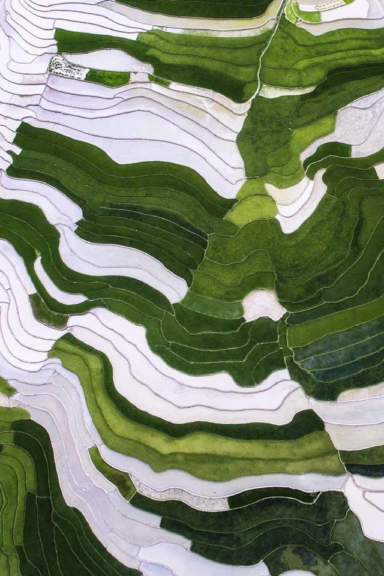
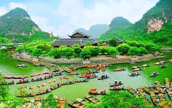
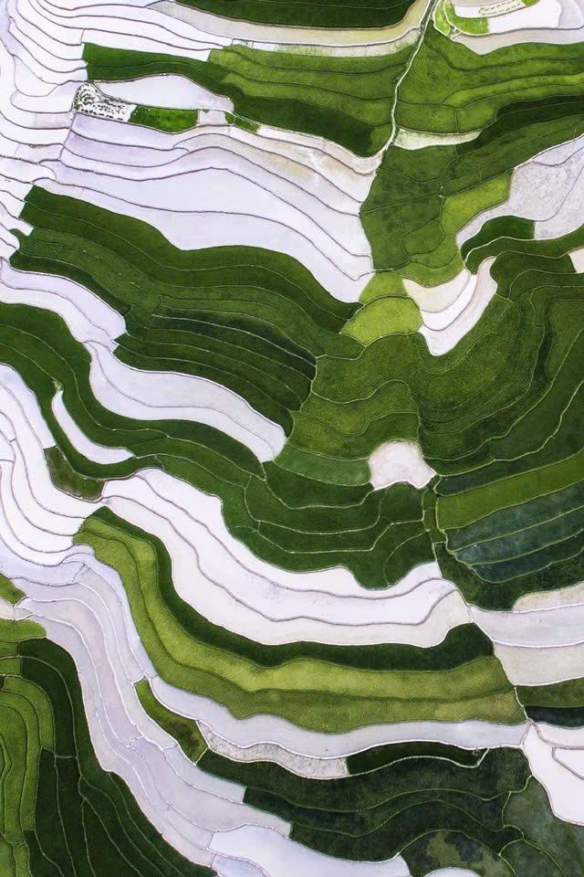
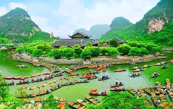
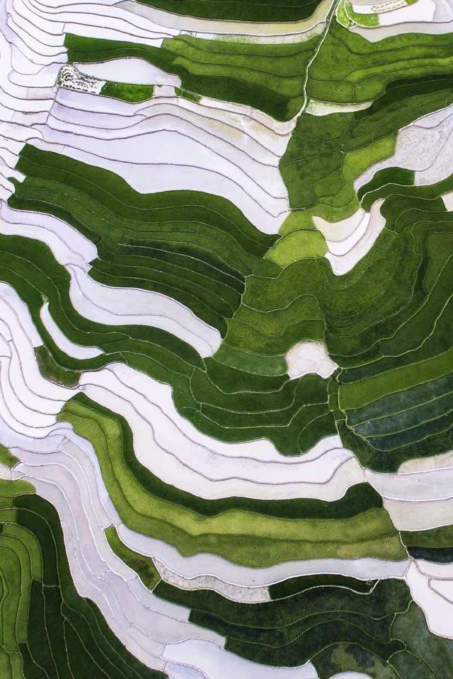
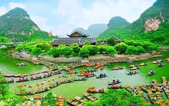
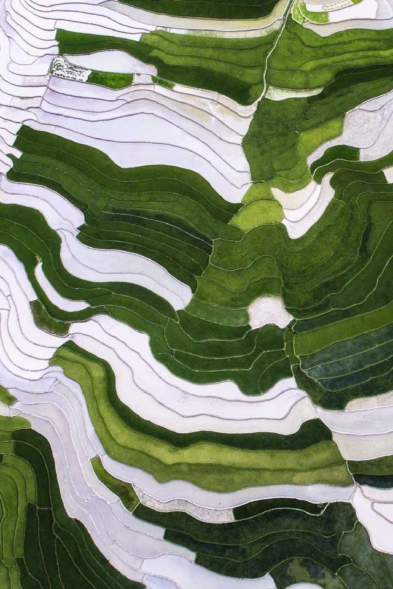
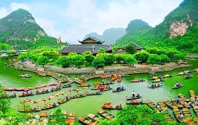

Trái tim hồng của cả nước.
Kỳ quan thiên nhiên thế giới.
Thành phố trong sương mờ ảo.
Vịnh Hạ Long trên cạn.
Mùa hoa cải, đồi chè xanh mướt.
Thác nước hùng vĩ nhất biên cương.


Mỹ Đức, Hà Nội
Hành trình về miền đất Phật mỗi độ xuân về.
Phú Thọ
Tín ngưỡng thờ cúng Hùng Vương thiêng liêng.
Bắc Ninh
Dân ca Quan Họ giao duyên đằm thắm.
Hà Giang
Phiên chợ phong lưu dành cho người lỡ duyên.
Tây Bắc
Sắc màu văn hóa rực rỡ của đồng bào dân tộc.
Mộc Châu
Cầu mong mưa thuận gió hòa, mùa màng bội thu.

Mù Cang Chải
Bay dù lượn trên những thảm lúa chín vàng.
Điện Biên
Biểu tượng tình yêu thủy chung của núi rừng.
Mộc Châu
Tạ ơn trời đất và thầy mo, gắn kết bản làng.